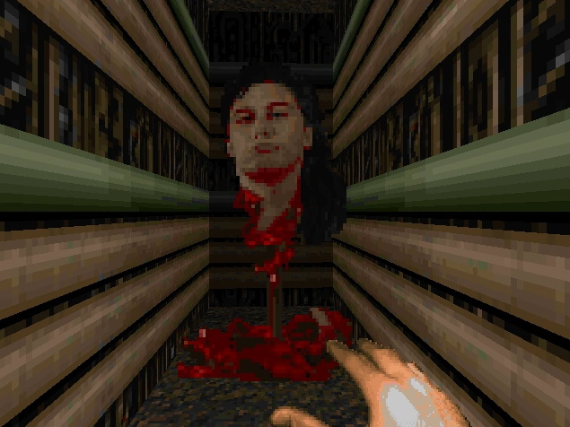
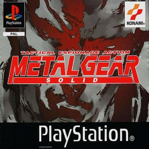
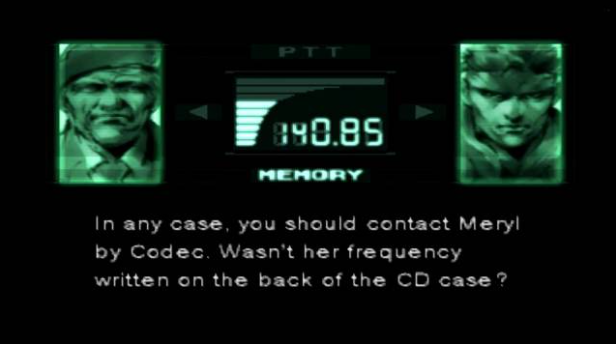

Easter Eggs conocidos
Doom - Romero's head
En MAP30: Icon of Sin, después de que el jugador se teletransporta a la gran sala con la cabeza del jefe final, un extraño, se reproduce un ruido ininteligible, presumiblemente diciendo: "Me acostaré en ladrillos al final de la emboscada". Esto se almacena en el archivo wad de Doom2 como DSBOSSIT, y si se invierte, se convierte en una voz que dice "Para ganar el juego, debes matarme, John Romero". La voz está bajada de tono y es la del mismo John Romero.
Espacio para el audio
The Legend of Zelda

En la edición de The Legend of Zelda: A Link to the Past, el clásico de Nintendo esconde el nombre de un fanático. Esto se debe a un concurso publicado por la revista Nintendo Power en 1990, donde el objetivo era encontrar al enemigo WarMECH en Final Fantasy. El ganador del concurso fue Chris Houlihan, quien obtuvo una habitación secreta en el juego. Tan rara es su ubicación, que debieron pasar 10 años hasta que en 2002 pudieron encontrar la pequeña sala.
Battlefield
El top 1 de easter eggs se lo lleva el conocido camuflaje de Battlefield 4 que, en principio sería exclusivo para los desarrolladores. En el mapa Dragon Valley tendremos que distinguir un templo con luces que titilan. Estos destellos en realidad son un código morse, que nos da los pasos a seguir para resolver un puzzle dentro del templo. Una vez completamos el puzzle (que no es fácil a pesar de la guía) tendremos que introducir un código que obtendremos de otro código morse de las lámparas. Luego de esto, introduciremos el código, pero tendremos que estar atentos a un sonido, donde debemos hacer unas cuentas para acertar el código final.
.--. .-. . ...- .. --- ..- ... | -- . ... ... .- --. . | -.-. --- .-. .-. ..- .--. - . -.. .- .-- .- .. - | ..-. ..- .-. - .... . .-. | .. -. ... - .-. ..- -.-. - .. --- -. ...
Traducción
PREVIOUS MESSAGE CORRUPTED AWAIT FURTHER INSTRUCTIONS
La cuarta pared
La cuarta pared se define como una pared imaginaria invisible que divide el espectador de la pelicula, obra o videojuego que está viendo.
En otras palabras, lo que divide la realidad de lo virtual.
En algunos juegos podemos ver como está pared se rompe, es el caso de:
Metal Gear Solid
Esta obra de Hideo Kojima es sin duda alguna una genialidad.
Esta genialidad está reflejada en parte cuando nuestro agente necesita contactar con Meryl por primera vez, el coronel nos pide que miremos la parte trasera de nuestra consola para buscar el número de códec. Y si, ahí está.
Pero no acaba aquí, el agente Psyco Mantis puede dictaminar si hemos caido en muchas trampas, si tenemos otros juegos instalados en nuestra memory card e incluso nuestra capacidad para el sigilo.
Incluso nos obliga a cambiar el mando de puerto para vencer al jefe final.